01Overview
TT-THEMEFONTEDITOR (formerly “TT Theme Font Editor”) is a ReaScript for REAPER that finds and changes the font sizes of the currently active theme — without touching the theme itself.
REAPER themes define their fonts in two places: a set of named fonts in the
theme ini file (including the sixteen user_font slots that WALTER, REAPER's
theme layout language, can assign to individual elements), and the rtconfig.txt
file that decides which element uses which font. Finding out “which font
controls this piece of text” by hand means reading rtconfig and guessing.
This script does the guessing for you: it evaluates rtconfig the same way
WALTER does — macros, layouts, scaling, variables and theme parameters — and
tells you which font is responsible for the spot you point at.
The workflow is:
- Point at any text in the REAPER window with the picker.
- The script shows which font (and which element) is responsible.
- Change the size, weight or italic flag; a preview is applied live through a working copy of the theme.
- When you are happy, write the result to a new theme file (or, if you choose so, back into the original).
Your original theme is not modified while you edit. All editing happens in a working
copy named <Name> (TT-Edit).ReaperTheme (plus an image folder of the same
name) inside your ColorThemes directory. When you bake, the script by default writes a
new file named <Name> (TimTechlor).ReaperThemeZip for zipped themes, or
<Name> (TimTechlor).ReaperTheme for a plain, unzipped theme — and loads it. If that name is
taken, the copy is numbered ((TimTechlor 2), (TimTechlor 3) …). Only if you switch
BAKE TO to OVERWRITE ORIGINAL does the bake write into the original file, and then
the previous version is kept as <file>.bak (section 13).
A plain theme that receives element overrides is baked as a
.ReaperThemeZip, because the modified rtconfig has to ship together with
its image folder.
Version 1.5.0 gives the window the look of the TimTechlor plug-ins (UI kit 7): graphite panels, LED switches, acid-green buttons, a tooltip on every control, and a window that rescales with its size (AUTO FIT). What the script does with your theme is unchanged.
02Requirements and installation
You need:
- REAPER 6.x or newer. The picker relies on
GetThingFromPoint, which older versions do not have. - ReaImGui 0.10 or newer, installed via ReaPack. If it is missing, the script shows “ReaImGui is missing (install it via ReaPack).” and exits.
- js_ReaScriptAPI (the “js_ReaScript API” extension, also via ReaPack).
It is required for zipped themes (
.ReaperThemeZip) and for the mouse tracking the picker uses to lock a spot. Without it, a zipped theme produces “js_ReaScriptAPI missing - cannot read zip”. - Optionally, the SWS extension. For areas that have no WALTER element — for example the ruler or empty arrange space — the script can ask SWS for the mouse context and still offer the matching ini font (timeline/ruler or item/take names).
Installation:
- Install it from the TimTechlor ReaPack repository, or copy
TT_ThemeFontEditor.luainto your REAPER Scripts folder (or any folder you keep ReaScripts in). - For a manual copy: open the action list (Actions → Show action list), click New action → Load ReaScript, and choose the file.
- Run it like any other action — from the action list, a toolbar button or a shortcut of your choice.
The file name stays TT_ThemeFontEditor.lua with the new name, so existing actions, toolbar buttons and
shortcuts keep working, and your saved settings carry over. On start, the script reads the theme that is active in
REAPER right now.
03The window at a glance
The window is titled TT-THEMEFONTEDITOR (initial size 800×820, freely resizable). From top to bottom:
- Header. The name TT-THEMEFONTEDITOR with the version (
v1.5.0), and on the right an LED with the preview state: PREVIEW ACTIVE (REAPER shows the working copy with your changes), ORIGINAL THEME (no preview running yet) or NO THEME. - Tool row. PICKER (or CANCEL PICKER while armed) on the left with a
short hint, OPTIONS on the right. Below it the THEME line with the file the script is
actually reading and, in acid green,
SCALE x% -> LAYOUT y: the UI scale taken from the REAPER preferences (including the DPI factor) and the mixer layout used to compute the fonts. - Panels (scrollable). TARGET (after you lock a spot), EDIT (once a font is selected), ALL FONTS and ELEMENT OVERRIDES (opened with its SHOW button).
- Action bar. BAKE THEME, DISCARD, RELOAD and a change counter that may add “(preview pending)”. Below them the BAKE TO row: CREATE COPY / OVERWRITE ORIGINAL and the name of the file BAKE THEME will write. While a longer job runs (extracting, copying, baking) a progress bar appears above the buttons.
- STATUS // line. One line reporting what the script is doing.
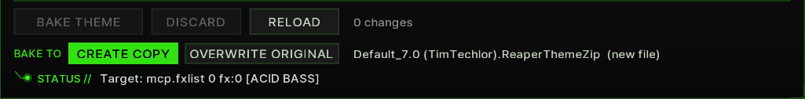
Every button, switch, slider, list row and value display has a tooltip: rest the mouse on it for about a third of a second. OPTIONS > TOOLTIPS ON / OFF switches them off (section 16).
If no readable theme is active when the script starts, the panels are replaced by CHOOSE A THEME: “No readable theme active.” plus a clickable list of the themes in your ColorThemes folder. Choosing one loads it in REAPER and opens it for editing.
04Quick start
- In REAPER, load the theme you want to adjust (Options/Themes or the theme picker of your choice).
- Start TT-THEMEFONTEDITOR. The STATUS line should read “Ready. N fonts, rtconfig ok” (or “no rtconfig” for themes without one).
- Click PICKER, move the mouse over the text whose size you want to change, and press Shift to lock it (a click works too).
- In TARGET, check the Responsible font:. If the detection looks wrong, pick another font from the list and verify with TEST.
- In EDIT, drag the size slider or use the - / + buttons. The preview reloads by itself when you release the mouse.
- Repeat for other spots, or adjust fonts directly in ALL FONTS.
- Click BAKE THEME. The script writes
<Name> (TimTechlor)next to the original, loads it, and removes the working copy. - Done — the original theme file is untouched and still on disk.
05Finding a font with the picker
Click PICKER to arm it. While it is armed, a small floating label follows
the mouse everywhere in the REAPER window (it disappears over the editor
window itself). The label shows the hit-test name REAPER reports for that
spot — for example mcp.fxlist 4 fx:4 — plus the track name, the resolved
layout, and the font candidates the script computed for it, or “no theme
font” if there is none.
To lock a spot you have two options:
- Press Shift. This locks without sending a click to REAPER — the safe choice over buttons, faders and other controls that react to clicks.
- Click. Releasing the left mouse button also locks the spot. Mind what you click on.
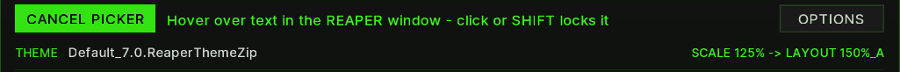
CANCEL PICKER disarms without locking. Once locked, the result moves into the TARGET panel and the first candidate font is selected in EDIT.
Sometimes TARGET is marked Coarse. That means REAPER only
reported the area (for example just mcp), not a specific element, so the
script lists every font candidate it could find there. Point more precisely
at the text, or try the candidates one by one with TEST.
Two special cases appear as a note instead of an editable font: elements
whose rtconfig font index is 0 use the theme main font, and index
-1 is the volume/pan font. These are not user_font entries, so they
cannot be edited in the list — the script tells you about them so a
seemingly “wrong” detection does not confuse you.
Spots without a WALTER element still have fonts: pointing at the ruler or
timeline offers Timeline / ruler (tl_font), and items or empty arrange
space offer Item / take names (mi_font).
06Hover & picker feedback
The window answers the mouse in three ways: controls light up under the pointer, every control explains itself in a tooltip, and while the picker is armed a label next to the pointer shows what the script found at that spot of the REAPER window.
Controls. Under the mouse, a button gets a lighter frame and a brighter label, a switch a lighter face, and the handle of the size slider a lighter grip. After resting on a control for about a third of a second a tooltip appears: one English sentence that says what the control does. Tooltips never appear while the mouse button is held (for example while you drag the slider), and OPTIONS > TOOLTIPS OFF switches all of them off.
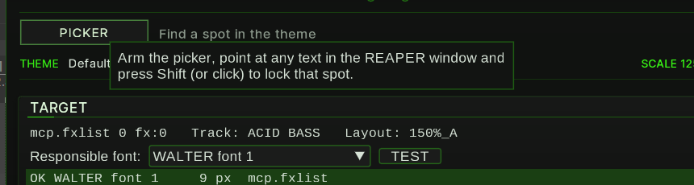
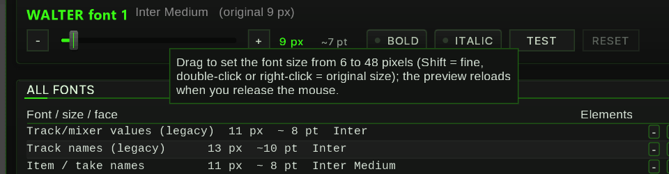
Lists. Rows of ALL FONTS, the TARGET candidates and the font lists are highlighted under the mouse; the selected row keeps its own, stronger highlight. Their tooltips say what a click does (“Click to edit this font in the EDIT section above.”), and the number in the Elements column lists the elements that use the font.
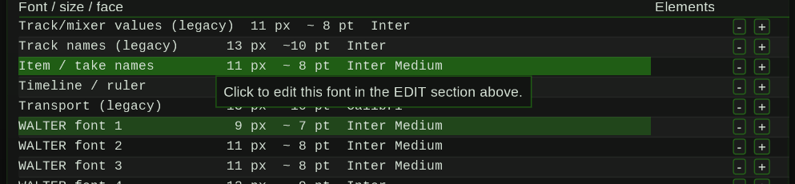
Picker label. While the picker is armed, the label next to the pointer shows the hit-test name REAPER reports for the spot, the track name, the layout the script resolved, and one line per font candidate with its current size. “OK” in front of a candidate marks a font you chose yourself in TARGET; “no theme font” means the theme sets no font of its own there. Over the editor window the label disappears, so you can reach CANCEL PICKER.
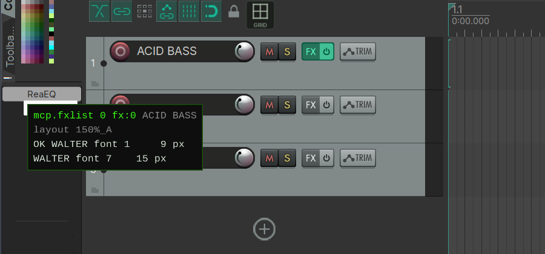
07The TARGET panel
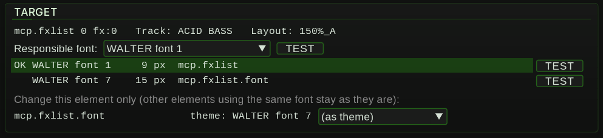
TARGET shows everything the script knows about the locked spot: the raw
hit-test name, the track (“Track: …”, MASTER for the master track) and
the layout the resolution ended in (“Layout: …”, default when no named
layout applies). If part of the element uses the main font or the
volume/pan font, a note says so.
Responsible font: is the font the script believes controls this spot. The list contains every font of the theme; the preselected entry is the computed result. If the detection is off — some themes use unusual constructions — choose the right font yourself and verify with TEST. Selecting (automatic) returns to the computed value. Your choice is remembered per theme, so the next time you pick the same spot it is already correct. The STATUS line confirms with “… remembered” or “… automatic again”.
Below are the candidates, one row per font found:
- OK marks the font you chose yourself.
- EL marks a font that reaches this spot through an element override (see section 10).
- No marker means the font was computed from the rtconfig.
Each row shows the font name, its pixel size, the element it came from and —
if the element gets its font through a WALTER variable such as main_font —
the variable name (“= main_font”). Clicking a row selects that font for
editing; each row has its own TEST button.
If the theme sets no font of its own at the locked spot, TARGET says so and suggests pointing more precisely or choosing from the list below.
When the spot has a handful of elements (up to six), TARGET also offers “Change this element only (other elements using the same font stay as they are)”: one row per element with the font the theme computed and a list to assign it a different WALTER font. This writes an element override — see section 10 for what exactly that does.
08Editing a font (EDIT panel)
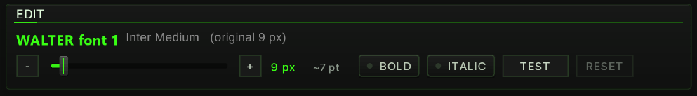
EDIT appears as soon as a font is selected — from a picker candidate or by clicking a row in ALL FONTS. The first line shows the font name, its face name and the original size (“original N px”) for comparison.
- - and + change the size by one pixel.
- The size slider sets the size directly (6–48 px): drag it left or right, hold Shift for fine steps, or turn the mouse wheel over it (one pixel per notch). A double-click, a right-click or Ctrl+click returns to the original size of the theme. The preview does not reload while you drag; it applies when you release the mouse.
- Next to it: the size in pixels (acid green) and an approximate point value. REAPER stores font heights in pixels; the point value is only a rough orientation (px × 0.75), so trust the preview, not the number.
- BOLD switches the font weight between regular and bold, ITALIC the italic flag. The LED in each switch shows the current state.
- TEST / TEST OFF runs the identification test described below.
- RESET becomes active once the font differs from the original theme and restores exactly that original value.
In narrow windows the switches move to a second row.
Under the controls, “used by N elements: …” lists the WALTER elements of the default layout that use this font (hover it for the full list). This is the best sanity check before changing a size: a font shared by forty elements will move forty things at once — element overrides exist for the cases where that is too much.
The TEST button (also next to the responsible font and each candidate) temporarily renders that one font much larger and bold — double size, at least +10 px, weight 800 — in the preview, so you can see at a glance where in the REAPER window it appears. It is a preview-only trick; nothing is written permanently, and pressing TEST OFF (or baking) ends it.
09The ALL FONTS list
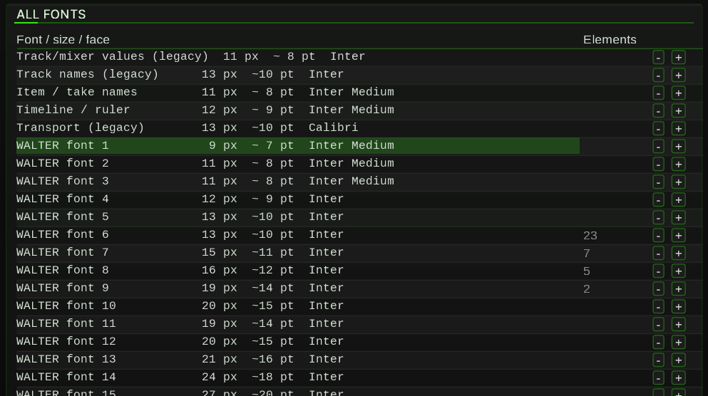
ALL FONTS is a scrollable table of every font defined in the theme ini:
the sixteen user_font slots (shown as “WALTER font 1” … “WALTER font 16”)
plus named ini fonts such as Timeline / ruler, Item / take names and
the legacy track, mixer and transport fonts.
Columns:
- Font / size / face — name, pixel size, approximate points, face name,
a “bold” tag when the weight is bold, and a
*when the font differs from the original theme. - Elements — how many elements of the default layout use the font; hover the number for the list.
- The unnamed last column holds quick - / + buttons for one-pixel steps without opening EDIT.
Clicking a row selects the font and opens it in EDIT above. The bar with three dots under the table is a splitter: drag it to make the list taller or shorter, double-click it for the default height. The height is remembered.
10Element overrides
Sometimes a font is shared by elements you do not want to touch — changing the font would move all of them. Element overrides solve this by reassigning one single element to a different font slot, leaving the shared font and everything else unchanged.
Technically, the script appends a line to the working copy's rtconfig after
every set <elem> … line for that element:
set <elem>.font [N . . . . . . .] ; TTFE
Only the first vector component — the font index — is replaced; the .
placeholders keep the rest of the vector (row heights, column widths and so
on) exactly as the theme computed them. Because the line is added at every
occurrence, the override applies to all layouts and all scale steps at
once.
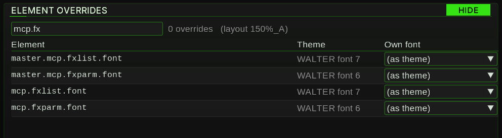
The ELEMENT OVERRIDES panel is closed by default; SHOW in its title row opens it,
HIDE closes it again. It lists all elements of the default layout
that have a font assigned at all. Use the filter box (“Filter, e.g.
mcp.fx”) to narrow the list by substring; the line next to it counts the active
overrides and names the layout the list is based on. For each element the
Theme column shows the computed font (“main font” or “vol/pan” for the
special indices), and the Own font list assigns a WALTER font —
choosing (as theme) removes the override again. Elements with an active
override are drawn in acid green. Only user_font entries (the sixteen
WALTER fonts) can be assigned; choosing an ini font is rejected with
“Only WALTER fonts can be assigned to elements”.
Two things to know:
- Overrides need a theme with an rtconfig and an image folder (a zipped theme or a plain theme with its folder). Otherwise the panel reads “This theme has no rtconfig - no elements.” and assigning one reports “Element overrides need a theme with rtconfig”.
- Changing an override rewrites the rtconfig, and REAPER does not re-read the rtconfig when the same theme file is loaded again. The script works around this by briefly loading the original and then the working copy — so the first preview after an override change takes roughly twice as long as a plain font change. That is normal.
11Live preview
Every change is previewed live. The mechanism is a working copy:
- The script writes
<Name> (TT-Edit).ReaperThemeplus, when needed, an image folder of the same name into the ColorThemes directory, and loads that file in REAPER. The header LED shows PREVIEW ACTIVE while it is up. - Changes are debounced: they are collected for about a third of a second and only applied once you stop editing — and never while the mouse button is held, so a slider drag applies when you release it. Until then the counter shows “(preview pending)”.
- The first preview for a zipped or folder-based theme needs the image folder once: the zip is extracted (or the folder copied) into the working folder. This happens in small slices — you will see a progress bar above the action buttons and “Preparing working copy (one time only) …” — so REAPER does not freeze. A marker file remembers the result, so later sessions skip this step unless the source theme changed.
A reload takes a moment because REAPER re-reads and redraws the whole theme. The STATUS line reports the result, e.g. “Preview active (3 changes, reload 420 ms)”. Your per-theme settings and layout choices are carried over to the working copy and restored across each reload, so the preview looks like your setup, not a default one.
Note on names: the working copy name is sanitized to plain ASCII, because REAPER resolves a plain theme's image folder reliably only then. Typographic dashes and quotes become their plain ASCII forms, any other non-ASCII character becomes an underscore — the baked file uses the same sanitized stem.
12Before / after
The pairs below show the same spot of the REAPER window before a change and right after it, in the live preview. Each time the spot was locked with the picker, and the responsible font got +6 px and BOLD — a deliberately large step so the difference is easy to see. Nothing was baked: the preview is the working copy, and DISCARD brought each spot back to its original look.
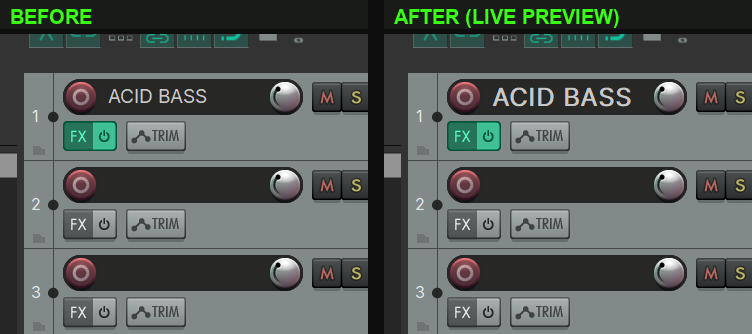
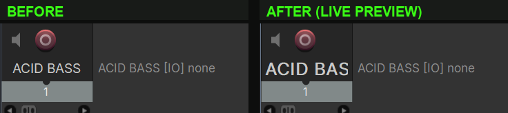
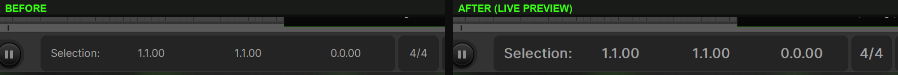
A fourth pair, for the baked theme instead of the preview, is in section 14.
Keep in mind that a font is often shared: the “used by” line in EDIT tells you how many elements move with it. To change one element only, use an element override (section 10).
13Baking a theme step by step
The preview lives in a working copy. BAKE THEME turns it into a theme file of its own. The pictures show the header, the tool row and the action bar at each step (Default 7.0 as the source theme).
1. Start. The header LED says ORIGINAL THEME, the THEME line names the source file, the counter reads “0 changes”. BAKE THEME and DISCARD are greyed out until there is a change.

2. Changes. As soon as the first change is previewed, the LED switches to
PREVIEW ACTIVE and the counter shows the number of changes (each changed font and each element override
counts once). In ALL FONTS the changed rows are marked with *.
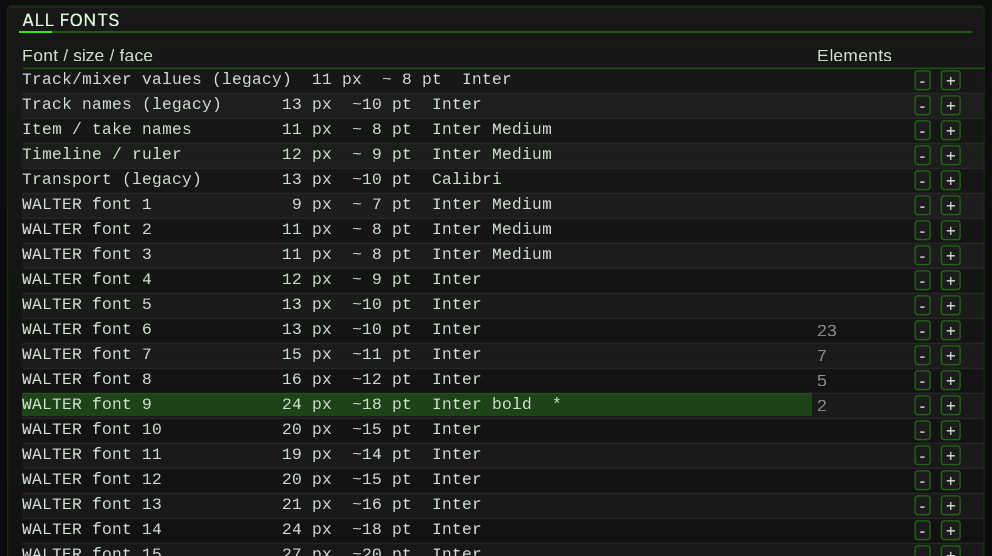
3. Choose and check the target. The BAKE TO row below the buttons decides where
BAKE THEME writes (details below the steps); next to it, and in the tooltip of BAKE THEME, stands the file that will be
written. With the default CREATE COPY and a theme that is not baked yet it is
<Name> (TimTechlor).ReaperThemeZip (or .ReaperTheme, see below) next to the source.
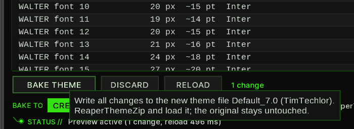
4. Bake. Clicking BAKE THEME starts a sliced job, so REAPER keeps running: a progress bar with “Baking n / total” appears above the buttons and the STATUS line reads “Writing <file> ...”. BAKE THEME, DISCARD and RELOAD are greyed out until the job is done. If the very first change is still being prepared when you click, the bake is queued (“Bake queued - preparing the working copy first …”) and starts by itself afterwards.
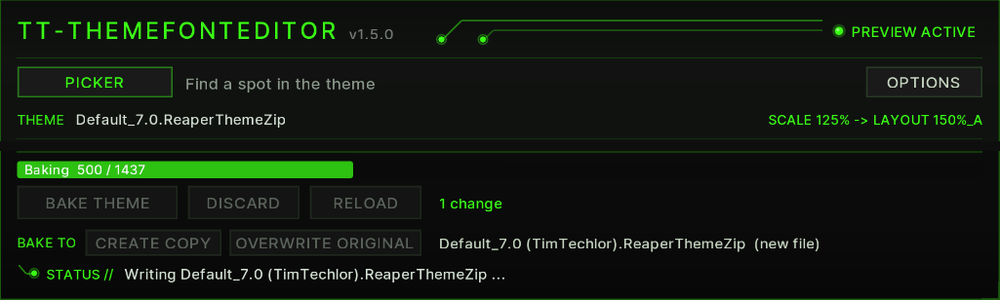
5. Done. The STATUS line names the file that was actually written: “Baked: <file> (new copy, original untouched)” or “Baked: <file> (original overwritten) - previous version kept as <file>.bak”. The new theme is loaded in REAPER. What else changes is described in the next section.
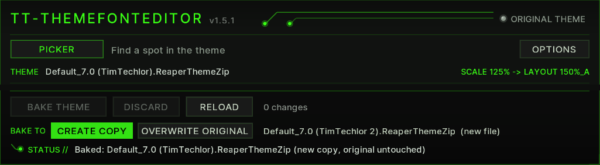
Bake target: CREATE COPY or OVERWRITE ORIGINAL
The BAKE TO row chooses where BAKE THEME writes. The choice is saved and applies to every theme until you change it.
- CREATE COPY (default) writes a new theme file next to the source, named
<Name> (TimTechlor). If a theme of that name already exists (as.ReaperThemeZipor as.ReaperTheme), the next free number is used:(TimTechlor 2),(TimTechlor 3)… An existing file is never replaced, and the source stays untouched. Baking an already baked theme again therefore gives a new numbered copy each time. - OVERWRITE ORIGINAL writes back into the file named on the THEME line — the theme you are
editing, even if that is a theme you did not bake yourself (for example Default 7.0). Its previous version is kept
as
<file>.baknext to it (one generation; the next overwrite replaces it). Use it when you want to keep working on one theme instead of collecting copies.
The default is CREATE COPY because a mistake then costs at most an extra file, never the theme you started from.
OVERWRITE ORIGINAL is greyed out for a plain (unzipped) theme with element overrides: such a theme is always baked as a
.ReaperThemeZip (see below), so it cannot replace the .ReaperTheme file; a copy is made and
the STATUS line adds “overrides need a zipped theme”.
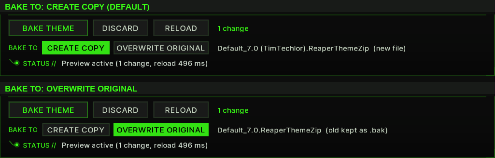
What gets written (names for CREATE COPY; with OVERWRITE ORIGINAL the source file itself):
- Zipped theme in →
<Name> (TimTechlor).ReaperThemeZipout. All original entries are copied; the theme ini entry is replaced by the patched one, and the rtconfig entry too if overrides exist. - Plain theme without overrides →
<Name> (TimTechlor).ReaperTheme. Only a new ini is written; it keeps referencing the original image folder. - Plain theme with overrides → also a
.ReaperThemeZip, assembled from the working folder so ini, rtconfig and images stay together.
The write is protected: the new theme is first written to a temporary file and checked. A copy only goes to a
name that is free; with OVERWRITE ORIGINAL the source is moved aside to <file>.bak and replaced only
when the new file is in place. A missing or unreadable file inside a zipped theme, or a write error (for example a full
disk), stops the bake with “Baking failed: …” or “Write failed: …” and leaves the existing files as
they were. If the target is the theme loaded in REAPER, the script switches to the preview first to release it; if
replacing a zipped theme still fails (locked by another program), the result is saved as the next free copy
(<Name> (TimTechlor N).ReaperThemeZip) and the STATUS line adds “target was locked”.
Closing the window while a job runs (preparing the working copy or baking) stops the job cleanly: open files are closed, the temporary file is removed, and no half-written theme is left behind. Nothing is baked in that case.
14What changes after baking
After “Baked:” the editor works with the baked theme as its new source:
- REAPER shows the baked theme. Your per-theme settings (theme parameters) and the track and mixer layouts are carried over to the new name, so the window looks like your setup with the new fonts.
- THEME line names the baked file, e.g.
Default_7.0 (TimTechlor).ReaperThemeZip. - Header shows ORIGINAL THEME again: no preview is running, REAPER shows the file the editor reads.
- Counter is back at “0 changes”. ALL FONTS shows the baked sizes without
*, and EDIT shows them as “original N px” — the baked theme is now the reference. - Working copy (
<Name> (TT-Edit)and its folder) is removed; the next change prepares a new one. - Your unbaked theme stays on disk unchanged and remains available in REAPER's theme list
(with CREATE COPY; with OVERWRITE ORIGINAL its previous version is the
.bakfile).
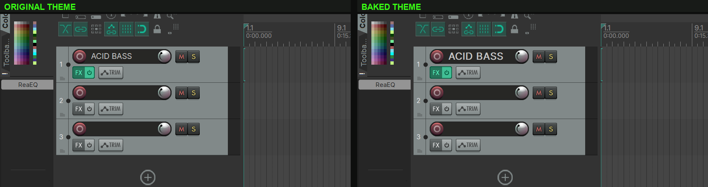
Baking again. When you change a baked theme and bake it again, BAKE TO decides: with
CREATE COPY you get the next numbered copy ((TimTechlor 2) …) and the baked theme stays as it is;
with OVERWRITE ORIGINAL the baked theme itself is updated and its previous version is kept as
<file>.bak (one generation; the next overwrite replaces it). The STATUS line names the file and, for an
overwrite, the backup: “Baked: <file> (original overwritten) - previous version kept as <file>.bak”.
A .bak file is not a theme file, so neither REAPER nor the editor lists it. To return to that version,
rename it back (remove .bak) and load it in REAPER.
15Discard and reload
DISCARD (active once there is at least one change) throws all changes away: every font returns to the value of the source theme, all element overrides are cleared, and the source theme is loaded again. The header goes back to ORIGINAL THEME, the counter to “0 changes”, and the STATUS line reads “Discarded - original active.”. The prepared working folder is kept, so the next preview starts quickly.
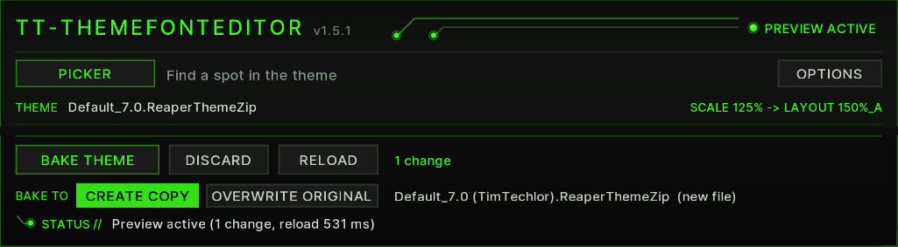
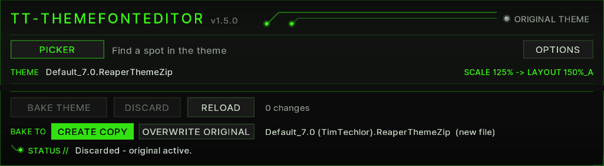
“Source theme” is the file on the THEME line. After a bake that is the baked theme, so DISCARD returns to the baked state, not to the theme you started from. To go back to that one, load it in REAPER and press RELOAD.
RELOAD re-reads whatever theme is active in REAPER — use it after switching themes or changing the UI scale in the preferences, because both change which fonts and layouts the script must evaluate.
Closing the window does not undo anything: if you close it with unsaved changes while the preview is active, the working copy simply stays loaded — a note goes to the log, and the next script run picks up that state again.
16Options: UI size, AUTO FIT, tooltips
OPTIONS (top right) opens a box for the editor window itself — these settings affect the script's window, not the theme.
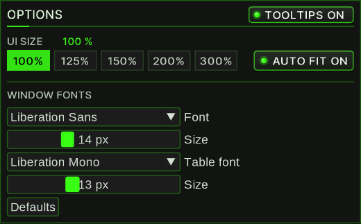
- TOOLTIPS ON / OFF (title row, right) — shows or hides the tooltips of every control in the window. Default on.
- UI SIZE: 100% / 125% / 150% / 200% / 300% — draws the whole window content (texts, panels, buttons, tables) at that size. The current size is shown next to the label. A size set this way stays until the window is resized again.
- AUTO FIT ON / OFF (right of the UI SIZE buttons, default on) — when you drag the edge of the window, the content rescales to the largest whole percentage at which the 800×820 design fits the new window (25 to 400 %). Switching it on fits the content to the current window at once; switched off, resizing the window leaves the size alone and the panels scroll. Opening the script keeps the saved size; only a later change of the window rescales.
- WINDOW FONTS — Font, the text font for labels and lists (Liberation Sans, Segoe UI, Arial, Verdana, Tahoma, Calibri, Inter), and its Size, 10–22 px; Table font, the fixed-width font for tables and the target line (Liberation Mono, Consolas, Cascadia Mono, Courier New, Lucida Console), and its Size, 9–20 px. These sizes apply at 100 % UI size and grow with it. Defaults returns to Liberation Sans 14 / Liberation Mono 13.
All OPTIONS settings — UI size, AUTO FIT, tooltips and the window fonts — are stored per REAPER installation and restored on the next start, together with the height of the ALL FONTS list. Settings saved by earlier versions are kept.
17WALTER fonts explained
You do not need to know WALTER to use this script, but a short map of what happens under the hood explains the names you see:
- A theme ini contains font definitions as hex blobs (
user_font0…user_font15, plus named entries liketl_fontormi_font). Each blob encodes height in pixels (negative heights mean character height), weight, italic flag and face name — the fields EDIT exposes. - In rtconfig,
set tcp.label.font [3 …]assigns a WALTER font index. The indices map as follows:
| WALTER index | Theme ini key | Shown in the editor as |
|---|---|---|
| 1 … 16 | user_font0 … user_font15 |
WALTER font 1 … 16 |
| 0 | — | theme main font (note only) |
| -1 | — | volume/pan font (note only) |
- To learn which index an element uses, the script evaluates rtconfig the
way WALTER does: macros (including parameter substitution and
##concatenation), nested layout blocks (a layout inherits the default lines plus its parent layouts plus its own),setlines in file order, arithmetic and conditionals, variables such asscaleandos_type, and theme parameters (define_parameter), with your current parameter values from the Theme Adjuster applied on top. Elements that get their font through a font variable (main_font,list_font,trans_font,header_font) show it as “= variablename”. - Scaling: the effective scale is the UI scale from the REAPER preferences
multiplied by the monitor's DPI factor. REAPER themes ship layout
variants for the steps 100 %, 150 % and 200 %, and REAPER always uses the
next step up — so 125 % UI scale is rendered with the 150 % layouts,
and the script evaluates those (a layout tagged
150, e.g.150%_A). That is whatSCALE 125% -> LAYOUT 150%_Aon the THEME line means. (This is REAPER's own UI scale, not the UI SIZE of the editor window.) - For a picked element the script resolves which layout applies: the
track's own layout (or the section default), the
master_variants for the master track, and the matching scale-step layout above 100 %. Layout names the rtconfig does not define fall back to the default layout, so the scale step is still applied.
18Troubleshooting / FAQ
The window says “No readable theme active.” Either no theme is loaded or its file could not be read. Pick a theme from the list shown — it will be loaded and opened for editing.
“js_ReaScriptAPI missing - cannot read zip”
The active theme is a .ReaperThemeZip and the js_ReaScriptAPI extension
is not installed. Install it via ReaPack and restart the script.
“ReaImGui is missing (install it via ReaPack).” Install ReaImGui via ReaPack (it must be version 0.10 or newer).
The picker does nothing / reports “The picker needs REAPER 6.x+”.
The picker needs GetThingFromPoint (REAPER 6.x+) and, for locking,
js_ReaScriptAPI. Without the latter the hover label may still appear but
Shift/click will not lock.
The picker shows the wrong font for a spot. Detection is computed, not guaranteed — exotic rtconfig constructs can mislead it. Choose the correct font in Responsible font: and verify with TEST; the choice is remembered for that theme. Also check the Coarse hint: when REAPER only reports an area, several candidates are listed and only TEST tells which one is right.
A spot shows “no theme font” or an empty candidate list.
The theme sets no user_font there — it may use the main font (index 0)
or the volume/pan font (index -1), which are shown as a note and cannot be
edited. Ruler and item texts are ini fonts and do appear in ALL FONTS.
The preview is not updating. Check the counter: “(preview pending)” means the debounce is still waiting or the mouse is held — release the slider. The very first preview for a zipped/folder theme first runs the one-time extraction (progress bar). Errors appear in the STATUS line and the log.
The window content is too small or too large. With AUTO FIT on, the content follows the window size: drag the window edge. Or open OPTIONS and choose a UI SIZE button; switch AUTO FIT off if the size should not change when you resize the window.
No tooltips appear. OPTIONS > TOOLTIPS is off. Switch it on; tooltips show after resting the mouse on a control for about a third of a second, not while dragging.
“Warning: working copy of the older TT_ThemeFonts script - rtconfig is modified.” The active theme is a working copy made by the older TT_ThemeFonts script, which rewrote rtconfig and may have lost scaling terms. Use the Load original button next to the warning to switch to the unmodified original; font changes in the old copy are not carried over.
“Theme file missing, no original found” / “Active theme '…' missing - reading '…'”. REAPER reported a theme path that no longer exists (renamed, moved). The script falls back to a theme of the same base name in the ColorThemes folder; the second message tells you it did so. If no match exists, the first message appears — load the theme manually and press RELOAD.
There is a file ending in .bak next to my theme.
It is the previous version of that theme, kept when you baked with BAKE TO: OVERWRITE ORIGINAL
(section 13). Only one generation is kept: the next overwrite replaces it. It is not a theme file and REAPER does not
list it; delete it when you do not need it, or remove .bak from the name to use it again. With the default
CREATE COPY no .bak is written.
My themes folder fills up with “(TimTechlor 2)”, “(TimTechlor 3)” … With CREATE COPY every bake makes a new file and never replaces one. Delete the copies you no longer need, or switch BAKE TO to OVERWRITE ORIGINAL while you refine one theme.
The STATUS line says “target was locked”.
With OVERWRITE ORIGINAL the theme file could not be replaced (typically because another program had it open). The
result was saved as the next free copy <Name> (TimTechlor N).ReaperThemeZip and the original is
unchanged — load the copy, or remove the lock and bake again.
Element overrides seem slow to preview. Expected: a changed override rewrites rtconfig, and REAPER will not re-read rtconfig on a same-path reload, so the script loads the original briefly and then the working copy — roughly twice the reload time.
I closed the window and the theme still says “(TT-Edit)”. Closing does not discard; the preview stays active. Run the script again and use DISCARD (or BAKE THEME), or simply pick another theme in REAPER.
Where is the log file?
<REAPER resource path>/tt_themefonteditor_log.txt — open it via
Options → “Show REAPER resource path in explorer/finder”. It records theme
detection, picker results, status changes and errors, and is cleared on
each script start.
19Changelog
1.5.0 — TT-THEMEFONTEDITOR, UI kit look
- New name: TT-THEMEFONTEDITOR (formerly “TT Theme Font Editor”); file name, action and saved settings stay the same.
- New look after the TimTechlor UI kit 7: graphite panels, LED switches, acid-green buttons and a drawn size slider; version shown in the header next to the name, preview state as an LED.
- Every control has a tooltip; OPTIONS > TOOLTIPS ON / OFF switches them off.
- NEW: OPTIONS > AUTO FIT ON / OFF (default on): dragging the window edge rescales the content to the new window size (25 to 400 %); the UI SIZE buttons 100 / 125 / 150 / 200 / 300 % set a fixed size until the window changes again. Saved.
- Safer baking: the previous export is never deleted first — it is moved aside and only replaced once the new file is in place; write errors such as a full disk are detected, and a plain theme is written to a temporary file and checked before it replaces the target; a missing or unreadable file inside a zipped theme stops the bake with “Baking failed: …” instead of writing an incomplete theme.
- NEW: BAKE TO chooses where BAKE THEME writes: CREATE COPY (default) makes a new theme file next to the original, numbered “(TimTechlor 2)”, “(TimTechlor 3)” … if the name is taken, and never replaces an existing file; OVERWRITE ORIGINAL writes back into the theme you are editing and keeps its previous version as
.bak. The choice is saved; the STATUS line names the file that was written. Closing the window while the working copy is prepared or a theme is baked stops the job cleanly, without a half-written file. - Fixes: BAKE THEME right after the first change now completes the bake after the one-time preparation; an incomplete working copy is reported instead of being used; selecting a font above 48 px no longer shrinks it; at a fixed large UI size the window scrolls instead of cutting off controls.
- EDIT: BOLD / ITALIC as switches, size slider with Shift for fine steps, mouse wheel and double-click / right-click to the original size; ELEMENT OVERRIDES opens with SHOW / HIDE.
1.3
- First release via ReaPack. Element overrides table uses the full remaining window height; draggable splitter between the font list and the element overrides.